Vida Selvagem
A Austrália possui uma fauna extremamente diversificada, com milhares de
espécies de animais.
O isolamento geográfico do continente durante milhões de anos contribuiu para
a evolução de espécies com características únicas.
Entre os animais mais conhecidos estão os marsupiais, mas também existem
muitos répteis, aves, mamíferos e animais marinhos.
• Mamiferos
| Imagens |
animal |
características |
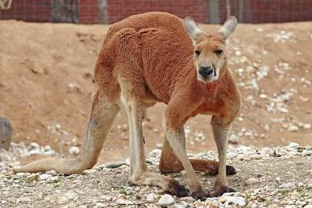 |
Canguru-vermelho |
Um dos maiores marsupiais do mundo. Vive principalmente em regiões abertas e áridas e utiliza os grandes saltos para se locomover. |
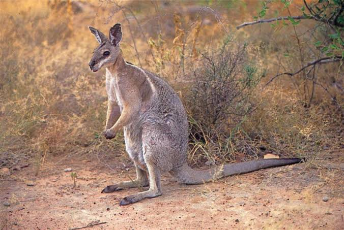 |
Wallaby |
Parente menor dos cangurus. Existem várias espécies e elas vivem em ambientes como florestas, áreas rochosas e campos. |
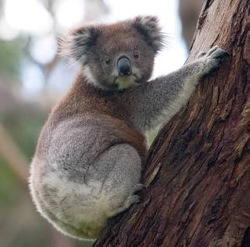 |
Coala |
Marsupial arborícola que se alimenta principalmente de folhas de eucalipto e passa grande parte do tempo descansando nas árvores. |
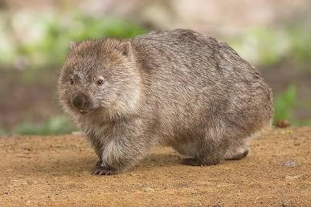 |
Wombat |
Animal de corpo robusto que vive em tocas subterrâneas. É principalmente noturno e se alimenta de vegetação. |
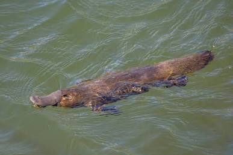 |
Ornitorrinco |
Mamífero que põe ovos. Vive em ambientes de água doce e possui bico e patas adaptados para nadar. |
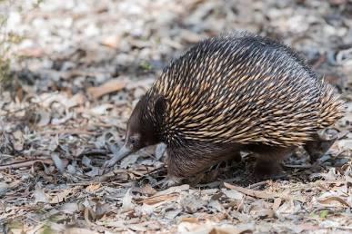 |
Equidna |
Mamífero que também põe ovos. Possui espinhos e um focinho comprido, sendo capaz de capturar formigas e cupins. |
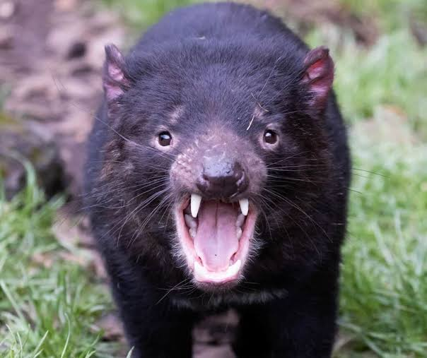 |
Diabo-da-Tasmânia |
Marsupial carnívoro encontrado naturalmente na Tasmânia. Possui uma mandíbula muito forte. |
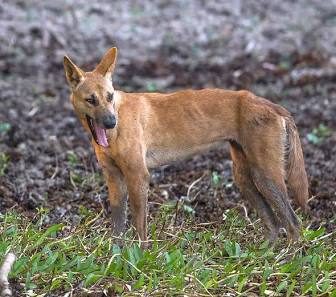 |
Dingo |
Canídeo selvagem encontrado em diversas regiões da Austrália. Pode viver sozinho ou em grupos. |
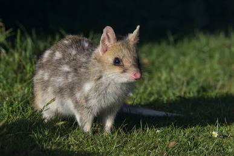 |
Quoll |
Pequeno marsupial carnívoro com manchas no corpo. É principalmente noturno e caça pequenos animais. |
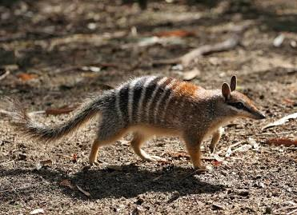 |
Numbat |
Pequeno marsupial que se alimenta principalmente de cupins. Possui listras no corpo e hábitos predominantemente diurnos. |
 |
Possum |
Grupo de marsupiais arborícolas que inclui diversas espécies. Muitos vivem em árvores e possuem hábitos noturnos. |
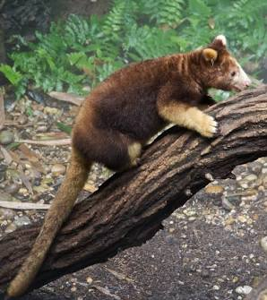 |
Canguru-arborícola |
Marsupial adaptado à vida nas árvores, encontrado principalmente nas florestas tropicais do norte da Austrália. |
|
Morcego |
A Austrália possui muitas espécies de morcegos, incluindo espécies que se alimentam de frutas e néctar. |
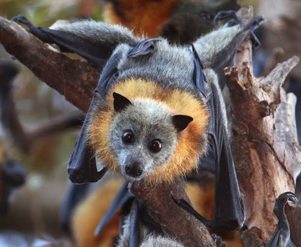 |
Raposa-voadora |
Grande morcego frugívoro que se alimenta principalmente de frutas, flores e néctar. |
• Aves
| Imagens |
animal |
características |
|
Emu |
Uma das maiores aves da Austrália. Não voa, mas possui pernas longas e consegue correr rapidamente. |
|
Cacatua |
Ave conhecida por sua inteligência, vocalização e crista de penas. Existem várias espécies na Austrália. |
|
Periquito-australiano |
Pequeno papagaio muito conhecido por suas cores e por viver em grandes grupos. |
|
Lóris-arco-íris |
Ave colorida que se alimenta principalmente de néctar, frutas e pólen. |
|
Casuar |
Grande ave que não voa, encontrada principalmente nas florestas tropicais do nordeste da Austrália. |
|
Pinguim-pequeno |
É a menor espécie de pinguim do mundo e pode ser encontrada em regiões costeiras da Austrália. |
|
Águia-marinha-de-barriga-branca |
Grande ave de rapina encontrada próxima a rios, lagos e regiões costeiras. |
|
Águia-australiana |
Grande ave de rapina com excelente visão e capacidade de voar longas distâncias. |
|
Kookaburra |
Ave conhecida pelo som de seu chamado, que pode lembrar uma risada. É encontrada em várias regiões do país. |
|
Cisne-negro |
Ave aquática de plumagem predominantemente escura, encontrada em áreas úmidas e corpos de água. |
• Répteis
| Imagens |
animal |
características |
|
Crocodilo-de-água-salgada |
Um dos maiores répteis existentes. Vive principalmente no norte da Austrália, em rios, estuários e áreas costeiras. |
|
Crocodilo-de-água-doce |
Espécie menor que o crocodilo-de-água-salgada, encontrada principalmente em rios e ambientes de água doce. |
|
Taipan |
Serpente australiana altamente venenosa, encontrada principalmente em regiões do norte e centro do país. |
|
Cobra-tigre |
Serpente venenosa que pode apresentar diferentes padrões de coloração. Vive em vários ambientes. |
|
Píton-ametista |
Uma das maiores serpentes da Austrália. Não possui veneno e utiliza a constrição para capturar suas presas. |
|
Diabo-espinhoso |
Pequeno lagarto coberto por espinhos. Vive em regiões áridas e alimenta-se principalmente de formigas. |
|
Dragão-de-água-australiano |
Lagarto que vive próximo a rios, lagos e áreas com vegetação. É um excelente nadador. |
|
Goanna |
Nome utilizado para diferentes espécies de grandes lagartos-monitores encontrados na Austrália. |
|
Tartaruga-de-pescoço-de-cobra |
Tartaruga de água doce com pescoço relativamente longo, encontrada em diferentes regiões australianas. |
|
Tartaruga-marinha |
Diversas espécies utilizam as águas e praias australianas para alimentação e reprodução. |
• Animais Marinhos
| Imagens |
animal |
características |
|
Baleia-jubarte |
Realiza longas migrações e pode ser observada em águas australianas durante determinadas épocas do ano. |
|
Golfinho-nariz-de-garrafa |
Vive em regiões costeiras e é conhecido por sua inteligência e comportamento social. |
|
Tubarão-branco |
Grande predador marinho encontrado em algumas regiões costeiras da Austrália. |
|
Tubarão-tigre |
Tubarão de grande porte que possui uma alimentação bastante variada. |
|
Tubarão-de-recife |
Vive próximo a recifes e participa do equilíbrio dos ecossistemas marinhos. |
|
Peixe-palhaço |
Pequeno peixe associado a ambientes de recifes e conhecido por sua coloração marcante. |
|
Peixe-papagaio |
Possui dentes adaptados para raspar e triturar alimentos encontrados nos recifes. |
|
Polvo |
Animal marinho muito inteligente, capaz de mudar sua coloração e utilizar diferentes estratégias para se esconder. |
|
Água-viva |
Tartaruga marinha encontrada em águas tropicais e subtropicais e que utiliza algumas praias para reprodução. |
|
Tartaruga-verde |
Tartaruga marinha encontrada em águas tropicais e subtropicais e que utiliza algumas praias para reprodução. |
|
Cavalo-marinho |
Pequeno animal marinho encontrado em diferentes ambientes costeiros. |
|
Estrela-do-mar |
Vive no fundo do mar e possui um papel importante nos ecossistemas costeiros e de recifes. |
• Anfíbios
| Imagens |
animal |
características |
|
Pererecas |
A Austrália possui diversas espécies de pererecas, muitas adaptadas a ambientes úmidos e florestais. |
|
Sapos |
Existem diferentes espécies de sapos australianos, encontrados em florestas, áreas úmidas e outros ambientes. |
|
Sapo-corroboree |
Pequeno sapo conhecido por seus padrões coloridos. É uma espécie ameaçada e encontrada em áreas específicas do sudeste da Austrália. |
Natureza
A natureza da Austrália é de uma diversidade impressionante, marcada por
paisagens contrastantes que vão do oceano às regiões centrais do país
• Grande barreira de Corais
O maior sistema de recifes de corais do mundo, visível até o espaço. Abriga
milhares de espécies marinhas, incluindo peixes tropicais, tartarugas,
tubarões e arraias.
• Desertos no Outback
O vasto interior árido da Austrália contém dunas de areia vermelha, formações
rochosas icônicas (como Uluru) e ecossistemas adaptados a condições extremas
de seca e calor.
• Florestas Tropicais e Temperadas
No norte e leste do país encontram-se florestas tropicais densas (como a Floresta
de Daintree, uma das mais antigas do mundo) e florestas temperadas de eucalipto.
• Praias Deslumbrantes
Com uma costa extensíssima, a Austrália possui praias famosas mundialmente pelas
areias alvas, mar de águas cristalinas e excelentes condições para o surfe.
Cidades
As principais cidades da Austrália destacam-se pela alta qualidade de vida,
infraestrutura moderna e pelo forte contraste entre áreas urbanas e a natureza
ao redor
• Sydney
A maior e mais famosa cidade do país. Conhecida por cartões-postais mundiais
como a Opera House e a Harbour Bridge , combina um centro financeiro agitado
com praias icônicas, como Bondi e Manly.
• Melbourne
Considerada a capital cultural e gastronômica da Austrália. É famosa por suas
ruas cheias de cafés, arte de rua, galerias, teatros e por sediar grandes
eventos esportivos internacionais.
• Brisbane
Uma cidade ensolarada e moderna no estado de Queensland. Possui um estilo de
vida descontraído focado em atividades ao ar livre, parques às margens do rio
Brisbane e clima subtropical durante o ano todo.
• Perth
Localizada na costa oeste, é uma das metrópoles mais isoladas do mundo.
Combina um visual urbano moderno com praias de águas cristalinas no Oceano
Índico e parques gigantescos, como o Kings Park.
• Adelaide
Conhecida por sua arquitetura planejada, parques que cercam todo o centro
urbano e por ser uma porta de entrada para algumas das regiões vinícolas mais
famosas do país.
• Camberra
A capital do país. Diferente das grandes metrópoles litorâneas, foi projetada,
abrigando o Parlamento, museus nacionais e monumentos históricos em meio a um
cenário cercado por morros e lagos.
Cultura Aborígene
A cultura aborígene da Austrália é uma das mais antigas tradições contínuas do
planeta, com raízes que se estendem há centenas de milhares de anos
• O Tempo do Sonho ( Dreamtime ou Jukurrpa )
Não se trata de uma ideia de "sonho" no sentido moderno, mas sim do conceito
de criação contínua. Representa a época em que os espíritos dos antepassados
percorreram a Terra, dando forma aos rios, montanhas e animais,
estabelecendo as leis e os costumes que continuam a orientar a vida espiritual
até aos dias de hoje.
• Conexão com a Terra ( País )
O conceito de País para os aborígenes engloba a terra, as águas, o céu, as
plantas e os animais. Não há separação entre o ser humano e a natureza; cuidar
do meio ambiente é considerado um dever espiritual e comunitário.
• Diversidade Linguística e Tribal
Antes da chegada dos europeus, existiam mais de 250 línguas e centenas de
dialetos distintos falados por diferentes grupos ou nações ao longo do
continente, cada um com as suas próprias tradições territoriais.
• Música, Dança e Rituais
O corroboree é um encontro cerimonial onde os povos aborígenes interagem com o
Dreamtime através de dança, música, pinturas corporais e vestimentas
tradicionais, transmitindo histórias e fortalecendo os laços comunitários.
• Gestão Sustentável da Terra
Muito antes das tecnologias modernas, utilizavam queimadas controladas para
estimular o crescimento, prevenir incêndios florestais devastadores e promover
o crescimento de novas plantas, atraindo animais para a caça de forma
sustentável.